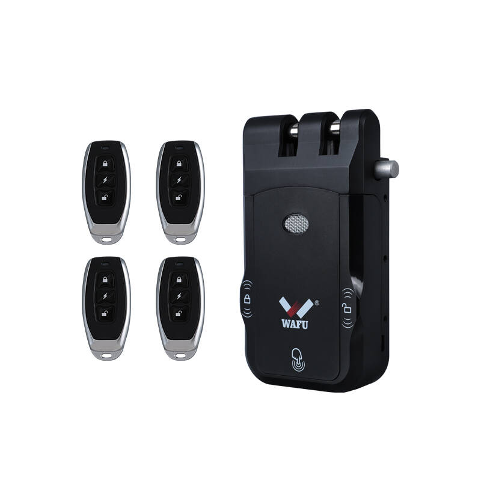
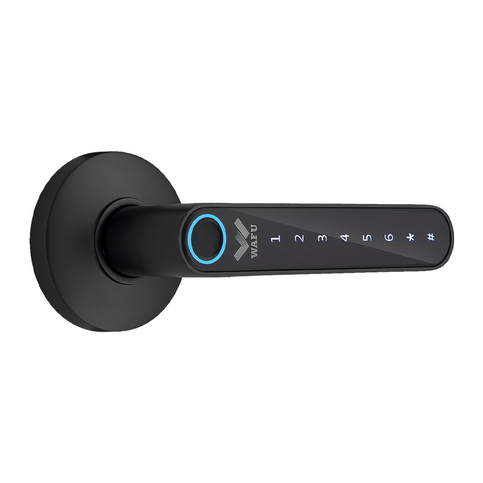
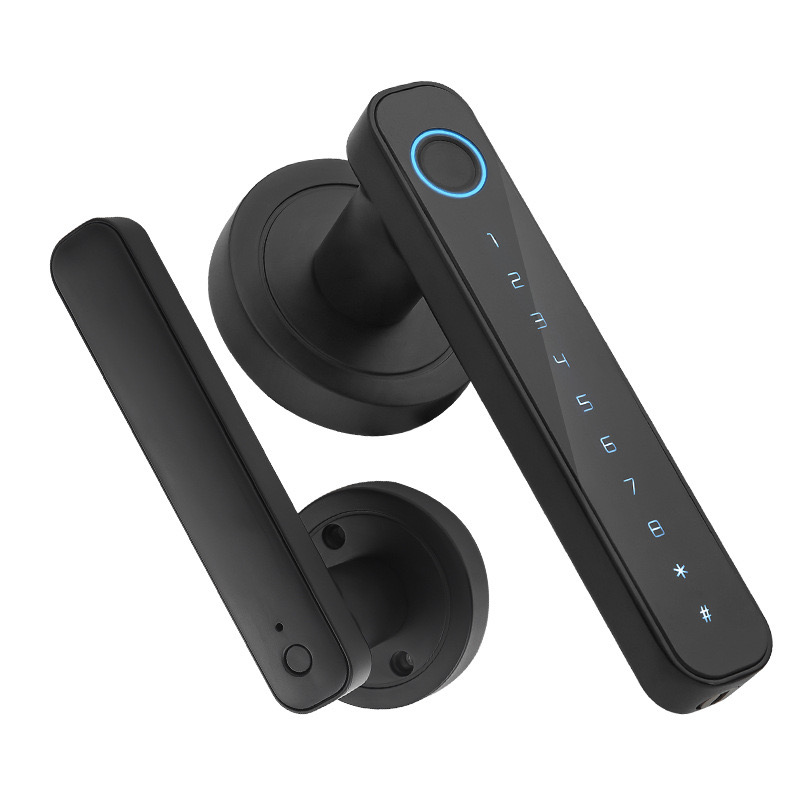

Produtos para Escritórios

WF-026 Fechadura Oculta Antirroubo
- Design oculto sem canhão exterior nem cabo de dados, aumentando o nível de segurança corporativa.
- Suporta emissão de palavras-passe temporárias para visitantes e janelas de limpeza/manutenção.
- Sistema duplo com dois motores: o motor de reserva ativa-se em caso de falha, garantindo funcionamento contínuo.
- Autonomia ≥12 meses, porta Type-C de emergência, sem interrupções durante cortes de energia.
- Produto muito procurado em compras empresariais; suporta OEM/ODM e personalização com logótipo.

WF-X8 Fechadura Inteligente com Olho Mágico
- Wi-Fi direto, desbloqueio remoto por telemóvel em segundos; impressão digital semicondutora em 0,3 s, capacidade para 100 utilizadores ›ideal para pequenas e médias empresas.
- Dupla proteção com alarme anti-violação e palavra-passe fantasma; alertas imediatos em tentativas ilegais, 10× mais segura que fechaduras mecânicas.
- Menu em 10 idiomas, uma única fechadura funciona globalmente para empresas de comércio internacional e multinacionais sem firmware adicional.
- Instalação sem perfuração para portas de 35–55 mm; 4 pilhas AA com autonomia ≥12 meses, sem paragens durante cortes de energia.

WF-016 Fechadura com Maçaneta
- Corpo monobloco em liga de zinco fabricado em Shenzhen, design sem fios, substituição direta de fechaduras cilíndricas/mortise antigas, sem perfuração ou cablagem, atualização em 3 minutos.
- Impressão digital semicondutora + palavra-passe de 6–10 dígitos + Bluetooth Tuya ›três métodos de desbloqueio; abertura com um clique ≤0,5 s, sem necessidade de chaves.
- Abertura esquerda/direita ajustável, compatível com portas de 35–55 mm.
- Autonomia ultra-longa de 365 dias, ideal para uso contínuo em escritórios.

WF-F4 Fechadura com Impressão Digital & Palavra-passe
- Gestão cloud via App: desbloqueio remoto, acesso por horários, eliminação com um clique quando colaboradores saem ›entrega de RH sem custos.
- Palavra-passe dinâmica/temporária para visitas de clientes, dispensando rececionistas.
- Instalação sem perfuração para portas de 35–55 mm, substitui fechadura cilíndrica antiga em 3 minutos, renovação sem tempo de paragem.
- 4 pilhas AAA com autonomia ≥80 dias, porta Type-C de emergência.

WhatsApp:
+86 15914193183
Telefone: +86 15914193183
Email: wafutechnology@gmail.com